pacman::p_load(sf, tidyverse, tmap, sfdep,zoo, Kendall)Take-home Exercise 2: Application of Spatial and Spatio-temporal Analysis Methods to Discover the Distribution of Dengue Fever in Tainan City, Taiwan
1. Background & Context
In this take home exercise, our central subject of study would be Dengue.
1.1 What is Dengue?
Dengue is a disease spread by mosquitoes, particularly, the female Aedes aegypti and Aedes albopictus mosquitoes, in tropical and subtropical regions like Taiwan. It is transmitted to humans th
e-infected person, the mosquito is then infected. After approximately one week, the mosquito can then transmit the virus to other people they bite. It can result in sudden high fever, severe headache, joint pains and skin rashes.
1.2 Why Study It?
It can easily spread in areas in Taiwan due to the tropical climate, the high population density and numerous pools of stagnant water - which is a loved breeding ground for mosquitoes. It is imperative to track the speed at which it spreads and the areas in which it can spread in order to curtail its spread. And thats what we will be doing in this take home exercise.
1.3 What in particular are we investigating?
- We firstly want to know if the outbreaks in Taiwan are independent of space and time. That means that the dengue instances would be randomly distributed and not show any pattern
- If they are not independent of space and time, we would want to find certain areas that have high incidents of dengue (hotspots) and low incidents of it (coldspots). We also want to find if there are certain times of the year when outbreaks are more common.
2. Packages
In this section, I will be installing and loading R packages into our R environment to use them. I will also explain the utility of each package.
Sf
It provides a comprehensive and standardized way to represent and manipulate spatial data.
- Allows you to represent points, lines and polygons
- Allows you to represent data using coordinate reference system, and transform data using that.
tidyverse
Imagine you have a bunch of dirty data that you woul have to handle. The Tidyverse package helps you handle the data. It has a bunch of packages within it to help handle data. It can do the following:
readr - reading and writing data into or out of a spreadsheet
tidyr - organizing and tidying up your data
ggplot2 - visualizing your data
dpylr - mainpulating your data, like doing some basic math to it.
tmap
Shows distribution of a characteristic across a geographic space.
sfdep
3. Data
3.1 Data Download & Import
Let us first look at the data we are utilising to conduct this analysis.
| Data Name | Description | Type | Format |
| Dengue Daily | This data denotes the locations and time of each dengue incident in Taiwan. | Geospatial | CSV |
| Historical map data of the village boundary (TWD97 longitude and latitude) | This data provides the internal and external boundary of Taiwan at the village level. | Geospatial | ESRI shapefile |
3.2 Geospatial Data
In this section, we will be importing and wrangling our data. We do this because data might not always be in the format that is suitable for our analysis, and hence, conversion to a suitable format is imperative.
3.2.1 Import the data
taiwan <- st_read(dsn = "data/geospatial",
layer = "TAINAN_VILLAGE")Reading layer `TAINAN_VILLAGE' from data source
`C:\shaysnutss\IS1455-GAA\Take-Home_Ex\Take-Home_Ex02\data\geospatial'
using driver `ESRI Shapefile'
Simple feature collection with 649 features and 10 fields
Geometry type: POLYGON
Dimension: XY
Bounding box: xmin: 120.0269 ymin: 22.88751 xmax: 120.6563 ymax: 23.41374
Geodetic CRS: TWD97Let’s look at the data to understand it better.
head(taiwan)Simple feature collection with 6 features and 10 fields
Geometry type: POLYGON
Dimension: XY
Bounding box: xmin: 120.053 ymin: 22.93251 xmax: 120.2905 ymax: 23.16919
Geodetic CRS: TWD97
VILLCODE COUNTYNAME TOWNNAME VILLNAME VILLENG COUNTYID COUNTYCODE
1 67000280002 臺南市 歸仁區 六甲里 Liujia Vil. D 67000
2 67000350032 臺南市 安南區 青草里 Qingcao Vil. D 67000
3 67000150009 臺南市 七股區 溪南里 Xinan Vil. D 67000
4 67000150010 臺南市 七股區 七股里 Qigu Vil. D 67000
5 67000150008 臺南市 七股區 龍山里 Longshan Vil. D 67000
6 67000150017 臺南市 七股區 中寮里 Zhongliao Vil. D 67000
TOWNID TOWNCODE NOTE geometry
1 D33 67000280 <NA> POLYGON ((120.2725 22.95868...
2 D06 67000350 <NA> POLYGON ((120.1176 23.08387...
3 D22 67000150 <NA> POLYGON ((120.121 23.1355, ...
4 D22 67000150 <NA> POLYGON ((120.1312 23.1371,...
5 D22 67000150 <NA> POLYGON ((120.0845 23.13503...
6 D22 67000150 <NA> POLYGON ((120.126 23.16917,...class(taiwan)[1] "sf" "data.frame"We can see that the data is in a data frame of type sf. This data frame talks about each village in Tainan city (in Taiwan), and accompanying information like which county and town the village is in.
Let’s see how Tainan city in Taiwan looks like when it is divided by its villages. In this plot below, we see Taiwan divided by villages, and each color represents a different town that it is part of.
tmap_mode("plot")
qtm(taiwan, fill="TOWNID")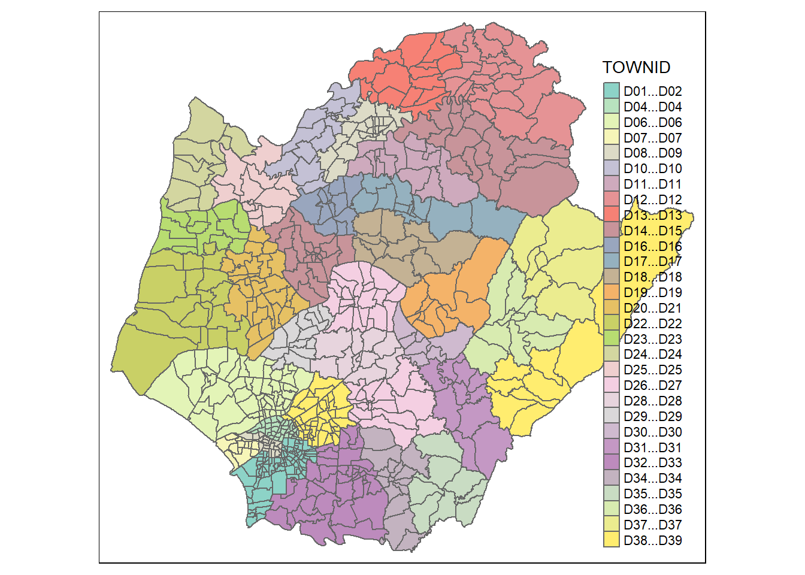
However, we only need towns D01, D02, D04, D06, D07, D08, D32 and D39.
3.2.2 Data Filtering
Let’s now filter the rows in our Taiwan data frame to contain rows/villages from just these particular towns: D01, D02, D04, D06, D07, D08, D32 and D39.
taiwan_filtered <- taiwan %>%
filter(TOWNID %in% c('D01', 'D02', 'D04', 'D06', 'D07', 'D08', 'D32', 'D39'))Let’s visualise the data again.
tmap_mode("plot")
qtm(taiwan_filtered, fill="TOWNID")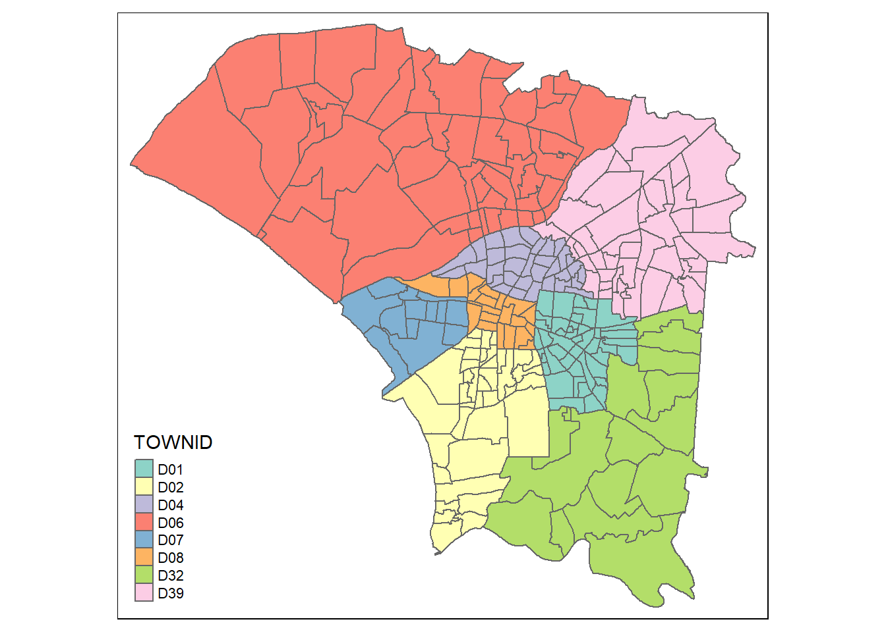
Here we see that we were successful in our filtering, we have got the villages just in the towns that we are interested in. This is a much smaller subset of the data we were working with, hopefully processing speeds would be higher too!
3.2.3 Assessing Geometric Validity
length(which(st_is_valid(taiwan_filtered) == FALSE))[1] 00 means that none of our rows have invalid geometries and that we could move on peacefully.
3.2.4 Missing values
We want to check if there are any empty rows. Datasets can be huge and consequently, we could have many empty rows that is just a waste of memory and processing power. Removing them would be useful.
Here’s how we do it:
# Use the filter function to check for empty rows
empty_rows <- taiwan_filtered %>%
filter_all(all_vars(is.na(.)))
# Check if there are any empty rows
if (nrow(empty_rows) > 0) {
cat("There are empty rows in the sf data tibble.\n")
} else {
cat("There are no empty rows in the sf data tibble.\n")
}There are no empty rows in the sf data tibble.Luckily, we have no empty rows either!
3.2.5 Coordinate reference system
st_crs(taiwan_filtered)Coordinate Reference System:
User input: TWD97
wkt:
GEOGCRS["TWD97",
DATUM["Taiwan Datum 1997",
ELLIPSOID["GRS 1980",6378137,298.257222101,
LENGTHUNIT["metre",1]]],
PRIMEM["Greenwich",0,
ANGLEUNIT["degree",0.0174532925199433]],
CS[ellipsoidal,2],
AXIS["geodetic latitude (Lat)",north,
ORDER[1],
ANGLEUNIT["degree",0.0174532925199433]],
AXIS["geodetic longitude (Lon)",east,
ORDER[2],
ANGLEUNIT["degree",0.0174532925199433]],
USAGE[
SCOPE["Horizontal component of 3D system."],
AREA["Taiwan, Republic of China - onshore and offshore - Taiwan Island, Penghu (Pescadores) Islands."],
BBOX[17.36,114.32,26.96,123.61]],
ID["EPSG",3824]]3.3 Aspatial Data
3.3.1 Import the data
Let’s import the data.
dengue <- read.csv("data/aspatial/Dengue_Daily.csv")Let’s explore how the data is like!
head(dengue) 發病日 個案研判日 通報日 性別 年齡層 居住縣市 居住鄉鎮 居住村里
1 1998/01/02 None 1998/01/07 男 40-44 屏東縣 屏東市 None
2 1998/01/03 None 1998/01/14 男 30-34 屏東縣 東港鎮 None
3 1998/01/13 None 1998/02/18 男 55-59 宜蘭縣 宜蘭市 None
4 1998/01/15 None 1998/01/23 男 35-39 高雄市 苓雅區 None
5 1998/01/20 None 1998/02/04 男 55-59 宜蘭縣 五結鄉 None
6 1998/01/22 None 1998/02/19 男 20-24 桃園市 蘆竹區 None
最小統計區 最小統計區中心點X 最小統計區中心點Y 一級統計區 二級統計區
1 A1320-0136-00 120.505898941 22.464206650 A1320-04-008 A1320-04
2 A1303-0150-00 120.453657460 22.466338948 A1303-09-007 A1303-09
3 A0201-0449-00 121.751433765 24.749214667 A0201-23-006 A0201-23
4 A6408-0153-00 120.338158907 22.630316700 A6408-10-010 A6408-10
5 A0209-0232-00 121.798235373 24.684507639 A0209-10-005 A0209-10
6 None None None None None
感染縣市 感染鄉鎮 感染村里 是否境外移入 感染國家 確定病例數 居住村里代碼
1 None None None 否 None 1 None
2 None None None 是 None 1 None
3 None None None 是 None 1 None
4 None None None 否 None 1 None
5 None None None 否 None 1 None
6 None None None 是 None 1 None
感染村里代碼 血清型 內政部居住縣市代碼 內政部居住鄉鎮代碼 內政部感染縣市代碼
1 None None 10013 1001301 None
2 None 第二型 10013 1001303 None
3 None None 10002 1000201 None
4 None None 64 6400800 None
5 None None 10002 1000209 None
6 None None 68 6800500 None
內政部感染鄉鎮代碼
1 None
2 None
3 None
4 None
5 None
6 NoneWe realise that the columns are in Chinese, so let’s translate them to english so that we can understand them better. I have used Google translate to individually translate each column to english
new_names <- c("Onset_date", "judgement_date", "notification_date", "gender", "age_group", "country_city_residence", "residential_township", "residential_village", "min_stat_area", "min_stat_area_center_point_x", "min_stat_area_center_point_y", "first_level_stat_area", "second_level_stat_area", "infected_counties_cities", "infected_towns", "infected_villages",
"immigrant", "country_of_infection", "confirmed_cases_number", "village_residence_code", "infected_village_code", "serotype", "interior_county_city_ministry_code", "interior_residence_township_ministry_code", "interior_infection_county_ministry_code",
"interior_infection_township_ministry_code"
)names(dengue) <- new_namesLet’s check if the translation has worked!
names(dengue) [1] "Onset_date"
[2] "judgement_date"
[3] "notification_date"
[4] "gender"
[5] "age_group"
[6] "country_city_residence"
[7] "residential_township"
[8] "residential_village"
[9] "min_stat_area"
[10] "min_stat_area_center_point_x"
[11] "min_stat_area_center_point_y"
[12] "first_level_stat_area"
[13] "second_level_stat_area"
[14] "infected_counties_cities"
[15] "infected_towns"
[16] "infected_villages"
[17] "immigrant"
[18] "country_of_infection"
[19] "confirmed_cases_number"
[20] "village_residence_code"
[21] "infected_village_code"
[22] "serotype"
[23] "interior_county_city_ministry_code"
[24] "interior_residence_township_ministry_code"
[25] "interior_infection_county_ministry_code"
[26] "interior_infection_township_ministry_code"3.3.2 Conversion of data types
The data type of all the fields in the data table is char, which doesn’t make sense for numeric values such as the x&y coordinates and the onset date.
Let’s change the data type of onset date.
In this code snippet, we convert onset date to a date datatype (it was char before). Then we create a new week column to detect the week of the onset date (we need it later to extract relevant weeks)
dengue_new <- dengue
dengue_new$Onset_date <- as.Date(dengue_new$Onset_date)
dengue_new$week <- as.numeric(format(dengue_new$Onset_date, "%V"))Let’s convert data type of X and Y coordinates.
However, I have noticed that some x and y coordinates are non numerical like “none” , and these will not be able to be converted. lets remove them first.
dengue_new <- dengue_new %>%
filter(grepl("^[+-]?[0-9]*[.]?[0-9]+$", min_stat_area_center_point_x))dengue_new <- dengue_new %>%
filter(grepl("^[+-]?[0-9]*[.]?[0-9]+$", min_stat_area_center_point_y))Now let’s do the conversion.
dengue_new$min_stat_area_center_point_x <- as.numeric(dengue_new$min_stat_area_center_point_x)
dengue_new$min_stat_area_center_point_y <- as.numeric(dengue_new$min_stat_area_center_point_y)3.3.3 Check Missing Data
dengue[rowSums(is.na(dengue))!=0,] [1] Onset_date
[2] judgement_date
[3] notification_date
[4] gender
[5] age_group
[6] country_city_residence
[7] residential_township
[8] residential_village
[9] min_stat_area
[10] min_stat_area_center_point_x
[11] min_stat_area_center_point_y
[12] first_level_stat_area
[13] second_level_stat_area
[14] infected_counties_cities
[15] infected_towns
[16] infected_villages
[17] immigrant
[18] country_of_infection
[19] confirmed_cases_number
[20] village_residence_code
[21] infected_village_code
[22] serotype
[23] interior_county_city_ministry_code
[24] interior_residence_township_ministry_code
[25] interior_infection_county_ministry_code
[26] interior_infection_township_ministry_code
<0 rows> (or 0-length row.names)Thankfully we have no missing data! Let’s proceed.
dengue_before_geo <- dengue_new3.3.4 Conversion of Lat/Long into Geometry
We want to convert the lat long to a point so that we could conduct spatial point analysis!
Now, let’s do the conversion!
dengue_new <- st_as_sf(dengue_new, coords = c("min_stat_area_center_point_x", "min_stat_area_center_point_y"), crs = 3824)Let’s look at our dengue_new now. it’s indeed projected in TWD97 and that’s what we wanted!
st_geometry(dengue_new)Geometry set for 106081 features
Geometry type: POINT
Dimension: XY
Bounding box: xmin: 118.3081 ymin: 21.92574 xmax: 121.9826 ymax: 26.15617
Geodetic CRS: TWD97
First 5 geometries:3.3.5 Extracting dengue cases from relevant weeks
We are asked to extract dengue cases from only week 31 to week 50 of 2023. We do not need data from other time periods. So, let’s do that!
dengue_new <- dengue_new %>% filter(year(Onset_date) == 2023
& (week >=31 & week <= 50))
dengue_before_geo <- dengue_before_geo %>% filter(year(Onset_date) == 2023
& (week >=31 & week <= 50))3.3.6 Extracting dengue data in specific areas
Our geospatial data, taiwan_filtered, provides the boundaries of villages in Tainan City in particular - not the whole of taiwan. And we had taiwan_``filtered created after selecting only a few towns in Tainan City. We need to make sure that the dengue_new data only corresponds to the areas defined in the taiwan_``filtered area.
#dengue_tainan <- st_intersection(taiwan_filtered, dengue_new)Let’s write this to rds as it was a time consuming task and we do not want to execute this agaain.
#write_rds(dengue_tainan, "../../data/rds/dengue_tainan.rds")dengue_tainan <- read_rds("../../data/rds/dengue_tainan.rds")tm_shape(taiwan_filtered) +
tm_polygons("TOWNID") +
tm_shape(dengue_tainan) +
tm_dots()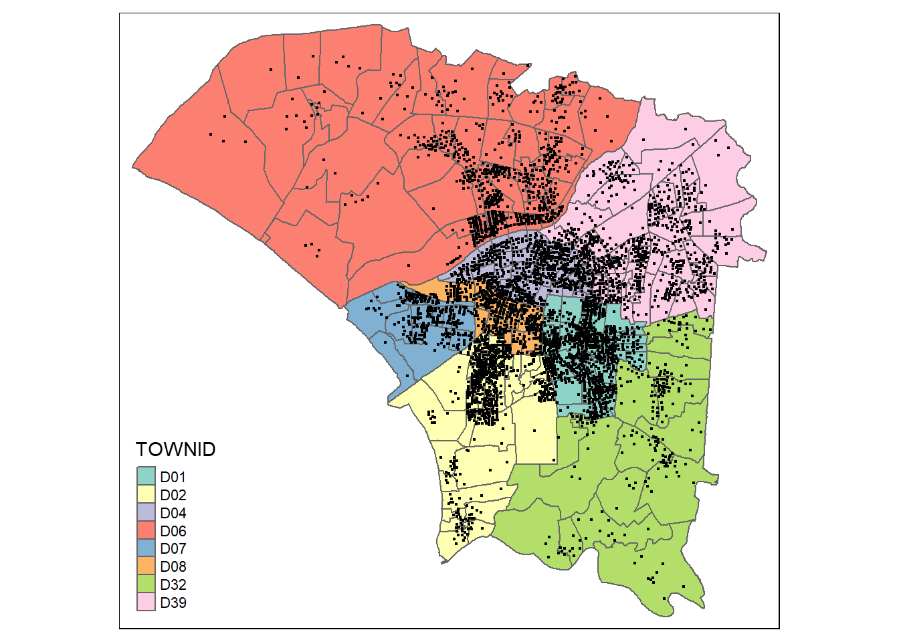
3.3.7 Examining dengue incidents /town
By looking at our graphical analysis, we can tell that villages in Towns. D01, D08, D04 have a high density of dengue cases.
Let’s see if that is right by plotting the number of dengue incidents per TOWNID!
dengue_summary <- dengue_tainan %>%
group_by(TOWNID) %>%
summarise(incidents = n(), .groups = 'drop')Let’s plot the results!
ggplot(dengue_summary, aes(x = reorder(TOWNID, -incidents), y = incidents)) +
geom_bar(stat = "identity", fill = "skyblue", color = "black") +
labs(x = "Town ID", y = "Number of Incidents", title = "Dengue Incidents by Town") +
theme_minimal() +
theme(axis.text.x = element_text(angle = 65, hjust = 1))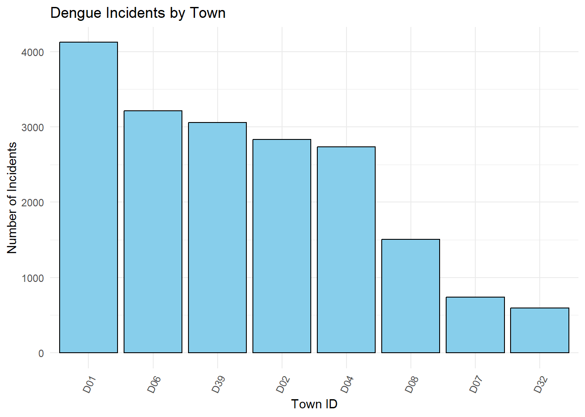
Guess we weren’t fully correct! The towns with the more incidents were D01, D06 and D39. But it is important to note that the top 5 towns have very similar number of incidents
3.3.8 Examining dengue /village
Now, let’s examine the number of incidents per village. And since we already examined the number of incidents per town, let’s see if the villages with the highest number of incidents come from towns with the highest number of incidents!
Note
This is very important to do so, so that we can make links between different facets of data - villages and towns and gain a better understanding of the geospatial distribution of the incidents.
In this section, not only are we aiming to find the villages with the highest number of incidents, we are trying to link them to the town they are from.
As our first task, let’s map the villages to their town on our own.
3.3.8.1 Mapping town to village
In our dengue_tainan data frame, each row corresponds to a particular incident of dengue in a particular point. There might be multiple points referring to the same village.
We need to remove the geometry column for this so that we can remove the uniqueness for each row and can group all the same village ids together. To do so, we change the data type of dengue_tainan and store it in dengue_tainan_no_geom.
dengue_tainan_no_geom <- st_set_geometry(dengue_tainan, NULL)Now let’s do the mapping between villagecode and townid.
villcode_townid_mapping <- dengue_tainan_no_geom %>%
select(VILLCODE, TOWNID) %>%
distinct()
head(villcode_townid_mapping) VILLCODE TOWNID
212 67000310004 D39
27 67000320003 D01
19 67000310001 D39
128 67000270012 D32
246 67000310025 D39
150 67000310037 D39We have done it!
3.3.8.1 Calculating top 10 villages
Here we group by villcode so that we can get the number of incidents per village
dengue_summary <- dengue_tainan %>%
group_by(VILLCODE) %>%
summarise(incidents = n(), .groups = 'drop')Let’s remove the geometry column here as well so that we can join it with the mapping we made above. We do this because we use left_join for combining the mapping with the number of incidents per village, and it does not allow us to have a geometry column
dengue_summary <- st_set_geometry(dengue_summary , NULL)Now let’s do the join.
dengue_summary <- dengue_summary %>%
left_join(villcode_townid_mapping, by = "VILLCODE")Let’s now get the top 10 villages with the most number of incidents
top_10_villages <- dengue_summary %>%
arrange(desc(incidents)) %>%
slice_max(order_by = incidents, n = 10)Here, let’s plot the number of incidents for the top 10 villages with the most incidents, in an ascending order. Each village will be uniquely colored based on the town it is from, so that we can make connections between the towns and villages with the most incidents.
ggplot(top_10_villages, aes(x = reorder(VILLCODE, -incidents), y = incidents, fill = as.factor(TOWNID))) +
geom_bar(stat = "identity", position = "dodge") +
scale_fill_viridis_d() +
labs(title = "Top 10 Villages with Most Dengue Incidents",
x = "Village Code",
y = "Number of Incidents",
fill = "Town ID") +
theme_minimal() +
theme(axis.text.x = element_text(angle = 45, hjust = 1), # Improve x-axis label readability
legend.position = "bottom") # Adjust legend position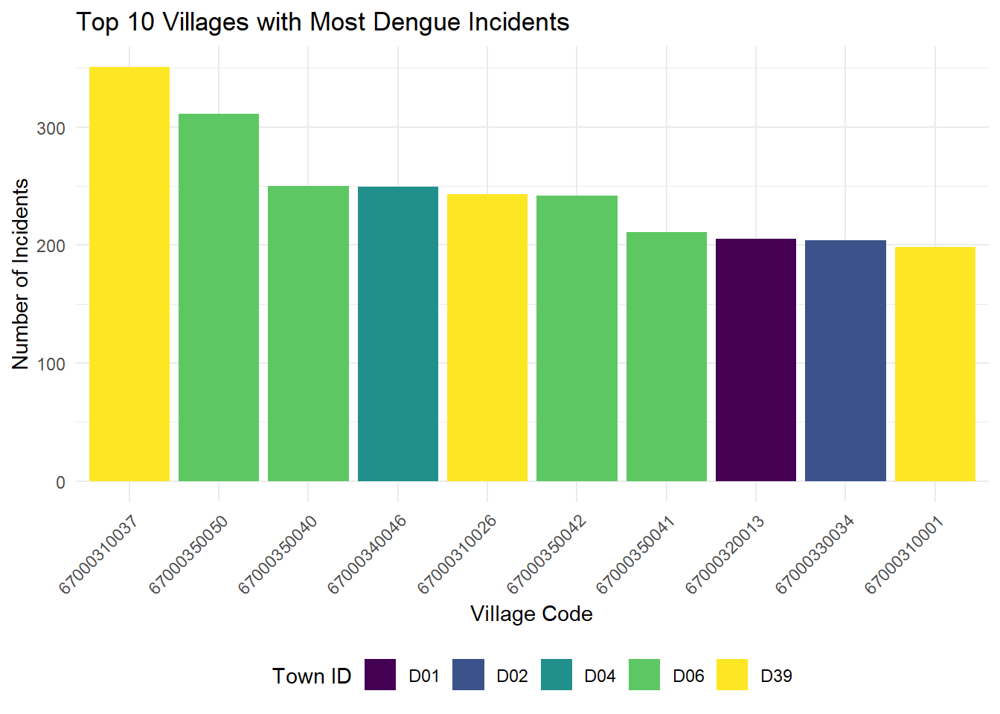
To analyse the graph above, let’s refer to our previous chart depicting the towns with the most incidents.
From the first graph, we can see that the village with the most incidents is from D39, however, D39 isactually the town with the 3rd most number of incidents.
But if D39 is a town with the 3rd most number of incidents, it is actually corroborated by the fact that in the first graph, 3 of the top 10 villages with the most incidents come from D39
From the second graph, we can see that D06 is the town with the second most number of incidents, 4 of the top 10 villages with most incidents actually come from town D06, thus making the second graph make a lot of sense!
What the interesting or controversial thing is, is that, D01 is said to be the town with the most number of incidents, but only one village from town D01 made it to the top 10 list! HMmm.. That means that multiple villages in D01 had a smaller number of incidents, whilst D36 maybe just had a select few villages with high number of cases.
3.3.9 Examining dengue /village/week
Let’s get all the weeks for each village code. We have to use village code as the unique identifier as there are 258 unique village codes but 253 unique village names. That means, there are multiple village codes with the same village =eng, so it’s important to disregard villageeng.
So let’s get all the weeks from 30-50 for each village code.
villagecode_week_set <- expand.grid(VILLCODE = unique(taiwan_filtered$VILLCODE), week= seq(31,50))Let us now see how many dengue incidents are there per week per village!
Let’s group by the week and the village code, and then add it up to calculate the total number of incidents
dengue_summary <- dengue_tainan %>%
group_by(VILLCODE, week) %>%
summarise(incidents = n(), .groups = 'drop')dengue_pervillage_week <- dengue_summaryhead(dengue_summary)Simple feature collection with 6 features and 3 fields
Geometry type: GEOMETRY
Dimension: XY
Bounding box: xmin: 120.2534 ymin: 22.98918 xmax: 120.2721 ymax: 22.994
Geodetic CRS: TWD97
# A tibble: 6 × 4
VILLCODE week incidents geometry
<chr> <dbl> <int> <GEOMETRY [°]>
1 67000270001 33 1 POINT (120.2583 22.99218)
2 67000270001 34 1 POINT (120.2612 22.99222)
3 67000270001 35 2 MULTIPOINT ((120.2625 22.994), (120.2668 22.98918…
4 67000270001 36 3 MULTIPOINT ((120.2555 22.99274), (120.2574 22.989…
5 67000270001 37 5 MULTIPOINT ((120.2555 22.99274), (120.2591 22.992…
6 67000270001 38 4 MULTIPOINT ((120.2534 22.99117), (120.2639 22.991…There are many rows in this data table, so let’s find out the particular weeks in specific villages that had the highest number of incidents.
In this code snippet, we get sort the incident values in a descending order, then take the top 10 rows, and change the columns.
top_10_incidents <- dengue_summary %>%
arrange(desc(incidents)) %>%
slice_max(order_by = incidents, n = 10) %>%
mutate(concatenated_vill_week = paste("vill", VILLCODE, "at week", week))Let’s plot it to see which weeks and villages had the most incidents
ggplot(top_10_incidents, aes(x = concatenated_vill_week, y = incidents, fill = VILLCODE)) +
geom_bar(stat = "identity", show.legend = FALSE) +
labs(x = "Village Code and Week", y = "Number of Incidents", title = "Top 10 Dengue Incidents by Village and Week") +
theme(axis.text.x = element_text(angle = 45, hjust = 1, vjust = 1)) 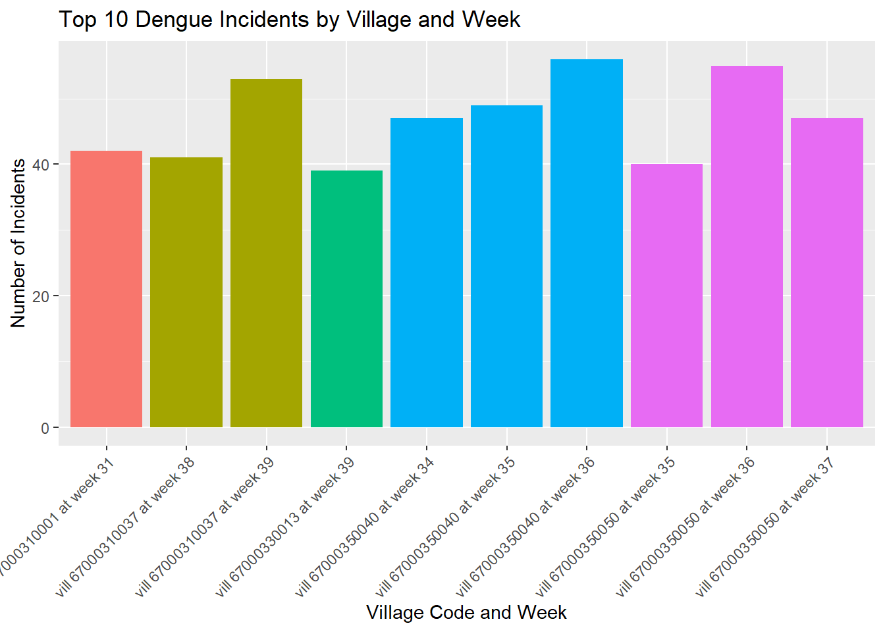
We can see that dengue_summary does not have all the weeks for each unique VILLCODE . So we must ensure that the resulting data table has a row represnting each week for each village code.
So we left join with the data frame with all the week-villagecode combinations so that all the ocmbinations will be included. The last line of code replaces week-villagecode combinations with no incidents as 0.
final_set<- left_join(villagecode_week_set, dengue_summary, by= c("VILLCODE", "week")) %>%
replace(is.na(.), 0)final_set <- left_join(taiwan_filtered, final_set, by = c("VILLCODE"))Let’s drop geometry.y as it refers to the dengue incident point, and we don’t need that as we are looking at number of incidents per village per week
final_set<- final_set %>%
select(-geometry.y)3.8.9 Additional Data Wrangling
Let’s get the number of incidents per village
dengue_per_village <- dengue_tainan %>%
group_by(VILLCODE) %>%
summarise(incidents = n(), .groups = 'drop')As I am trying to investigate the number of incidents per week, i do not need the gemoetries of each individual point that have amalgamated into a multipoint. So, let’s remove geome
dengue_per_village <- st_set_geometry(dengue_per_village , NULL)Let’s perform left join.
tryNow <- left_join(taiwan_filtered, dengue_per_village, by = c("VILLCODE"))tmap_mode("plot")
tm_shape(tryNow) +
tm_fill(col = "incidents",
style = "quantile",
palette = "Purples",
title = "Number of Dengue Cases") +
tm_layout(main.title = "Number of Dengue Cases",
main.title.position = "center",
main.title.size = 1,
legend.height = 0.4,
legend.width = 0.3,
frame = TRUE) +
tm_borders(alpha = 0.5) +
tm_scale_bar()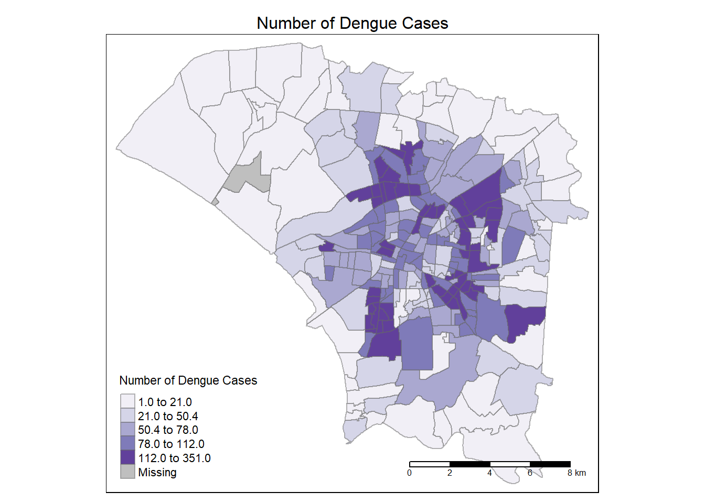
4. Global Measures of Spatial Association
In statstics, we are interested to find out if the observed distribution follows normal distribution. we need to go beyond EDA and actually confirm that the distribution follows normal distribution.
To confirm normal distribution, we need to conduct a formal statistical test.
Before we can conduct statistical test, we need to understand how spatial relationships between geographical areas can be defined mathematically. And this is known as spatial weights
4.1 Calculating Contiguity Weights: Queen’s method
Here we are trying to determine the neighbours of each village, and then we are determining how much each neighbour could affect the focus location (through weights)
When doing it, i got an error that there were NA values. When we looked at our tryNow data frame, there was a column called Note with only NA values.
Hence, let’s remove that.
tryNow <- tryNow %>%
select(-NOTE)tryNow <- tidyr::drop_na(tryNow)Now, let’s calculate the weights of neighbouring villages of each focal village.
wm_q <- tryNow %>%
mutate(nb = st_contiguity(geometry),
wt = st_weights(nb,
style = "W"),
.before = 1)wm_qSimple feature collection with 257 features and 12 fields
Geometry type: POLYGON
Dimension: XY
Bounding box: xmin: 120.0627 ymin: 22.89401 xmax: 120.2925 ymax: 23.09144
Geodetic CRS: TWD97
First 10 features:
nb
1 6, 118, 160
2 126, 128, 138, 167, 221
3 68, 69, 171, 180, 183, 184, 187, 199
4 94, 97, 100, 104, 181, 206
5 12, 13, 248, 254
6 1, 12, 13, 118, 160, 248
7 54, 98, 99, 200
8 9, 73, 75, 115, 125, 144, 156, 157, 165, 185
9 8, 110, 115, 125, 165
10 11, 159, 161, 165, 235, 257
wt VILLCODE
1 0.3333333, 0.3333333, 0.3333333 67000350032
2 0.2, 0.2, 0.2, 0.2, 0.2 67000270011
3 0.125, 0.125, 0.125, 0.125, 0.125, 0.125, 0.125, 0.125 67000370005
4 0.1666667, 0.1666667, 0.1666667, 0.1666667, 0.1666667, 0.1666667 67000330004
5 0.25, 0.25, 0.25, 0.25 67000350028
6 0.1666667, 0.1666667, 0.1666667, 0.1666667, 0.1666667, 0.1666667 67000350030
7 0.25, 0.25, 0.25, 0.25 67000370009
8 0.1, 0.1, 0.1, 0.1, 0.1, 0.1, 0.1, 0.1, 0.1, 0.1 67000350017
9 0.2, 0.2, 0.2, 0.2, 0.2 67000350049
10 0.1666667, 0.1666667, 0.1666667, 0.1666667, 0.1666667, 0.1666667 67000350018
COUNTYNAME TOWNNAME VILLNAME VILLENG COUNTYID COUNTYCODE TOWNID
1 臺南市 安南區 青草里 Qingcao Vil. D 67000 D06
2 臺南市 仁德區 保安里 Bao'an Vil. D 67000 D32
3 臺南市 中西區 赤嵌里 Chihkan Vil. D 67000 D08
4 臺南市 南區 大成里 Dacheng Vil. D 67000 D02
5 臺南市 安南區 城北里 Chengbei Vil. D 67000 D06
6 臺南市 安南區 城南里 Chengnan Vil. D 67000 D06
7 臺南市 中西區 法華里 Fahua Vil. D 67000 D08
8 臺南市 安南區 海南里 Hainan Vil. D 67000 D06
9 臺南市 安南區 國安里 Guo'an Vil. D 67000 D06
10 臺南市 安南區 溪心里 Xixin Vil. D 67000 D06
TOWNCODE incidents geometry
1 67000350 2 POLYGON ((120.1176 23.08387...
2 67000270 19 POLYGON ((120.2304 22.93544...
3 67000370 111 POLYGON ((120.2012 22.99966...
4 67000330 29 POLYGON ((120.1985 22.98147...
5 67000350 1 POLYGON ((120.1292 23.06512...
6 67000350 10 POLYGON ((120.1246 23.06904...
7 67000370 38 POLYGON ((120.2094 22.98452...
8 67000350 44 POLYGON ((120.175 23.02218,...
9 67000350 112 POLYGON ((120.1866 23.02766...
10 67000350 65 POLYGON ((120.1834 23.06086...Let’s understand this. We can see that there is a list of neighbours for each village. For example, the first village has neighbours 6, 118, 160. And each of the neighbours had equal weight, with each neighbour having the same influence over the village
4.2 Computing Global Moran’ I
What is Global Moran’ I?
Global Moran’s I is a statistical measure used to assess spatial autocorrelation in data measured across a geographic area. We are trying to assess whether similar values cluster close together, or are further away.
Value’s meaning:
- A positive value indicates positive spatial correlation and that similar values cluster together.
- A negative value indicates negative spatial correlation and that similar values being spatially apart.
- A value near zero implies a random spatial distribution of the values, showing no significant autocorrelation
moranI <- global_moran(wm_q$incidents,
wm_q$nb,
wm_q$wt)
glimpse(moranI)List of 2
$ I: num 0.464
$ K: num 5.66The Global Moran’s I statistic was 0.464. This suggests a positive spatial autocorrelation. This means that similar values of incidents tend to be clustered together geographically in your dataset.
Not only do we Global Moran’s I statistic, we want to assess the statistical significance of the Moran’s I statistic if the spatial pattern is unlikely to have occurred by chance.
4.3 Performing Global Moran’s I test
global_moran_test(wm_q$incidents,
wm_q$nb,
wm_q$wt)
Moran I test under randomisation
data: x
weights: listw
Moran I statistic standard deviate = 12.705, p-value < 2.2e-16
alternative hypothesis: greater
sample estimates:
Moran I statistic Expectation Variance
0.464386792 -0.003906250 0.001358653 Based on analysis result, sicne p value which is 2.2e-16 and is much lower than the confidence interval value of 0.05, we have enough statistical evidence to reject the null hypothesis that states that points are randomly distributed. It allows us to infer that the distribution resembles clustering because the Moran I value was over 0.4.
As it is 0. we can infer there is clustering, but the value is not tool large- so there is clustering but at very distinct places. So we need to execute local moran to detect the specific areas with hotspots/coldspots , clusters and outliers.
4.4 Performing Global Moran’s permutation test
We do this to double confirm that there indeed is clustering and that the incidents of dengue are not randomly distributed. We do this through monte carlo simulations.
How are Monte Carlo Simulations conducted?
Start with Real Spatial Data: We have a map with data points, each representing a value of interest, like dengue incidents in different villages.
The Question: We want to know if dengue incidents in one village are related to high dengue incidents in neighboring village (positive spatial autocorrelation), or if it’s just random.
Creating a Simulated World:
- Imagine we take the map and erase all the dengue incidents data.
- Then, we redistribute those dengue incidents data randomly across the map. This means we're shuffling the data points so they no longer have their original spatial pattern. Each village gets a dengue incidents data, but now it's randomly assigned, not based on the real-world data.- Calculating Moran’s I for the Simulated World:
1. WE do simulations (which represent a world of randomness without any spatial pattern),
2. With this shuffled map, we calculate Moran's I, a statistic that measures how much the dengue incidents data in one village is similar to the rates in nearby villages.
3. This calculation gives us a sense of whether the shuffled (randomized) data still shows any pattern of similar values being close together.Repeat the Simulation Multiple Times:
We don’t do this process just once. We repeat it many times, each time reshuffling the data and calculating a new Moran’s I.
This creates a bunch of Moran’s I values from worlds that are similar to ours but with randomized crime rates.
Compare the Real World to the Simulated Worlds:
- Now, we compare the Moran's I you calculated from your real data to the range of Moran's I values you got from your simulations.
- If the real Moran's I is much higher than what we mostly see in the simulations, it suggests that the pattern in your real data is not random; it's statistically significant.- It is alway a good practice to use
set.seed()before performing simulation. This is to ensure that the computation is reproducible.
set.seed(1234)Next, global_moran_perm() is used to perform Monte Carlo simulation.
global_moran_perm(wm_q$incidents,
wm_q$nb,
wm_q$wt,
nsim = 99)
Monte-Carlo simulation of Moran I
data: x
weights: listw
number of simulations + 1: 100
statistic = 0.46439, observed rank = 100, p-value < 2.2e-16
alternative hypothesis: two.sidedIn the context of Monte Carlo simulations, the rank of the observed Moran’s I value (0.46439) among the Moran’s I values generated from the simulated random datasets indicates its position. A rank of 100 out of 100 means that the observed Moran’s I was the highest among all simulated values, suggesting that the observed spatial autocorrelation is exceptionally strong compared to what would be expected by chance.
The very low p value also allows us to reject the null hypothesis and deduce that the spatial autocorrelation is unlikely to have occurred by chance.
We can infer that the spatial distribution shows sign of clustering.
Now, let’s use local moran to identify areas where clustering occurred.
4.5 Computing local Moran’s I
lisa <- wm_q %>%
mutate(local_moran = local_moran(
incidents, nb, wt, nsim = 99),
.before = 1) %>%
unnest(local_moran)4.5.1 Visualisng local Moran’s I
Let’s visualise!
tmap_mode("plot")
tm_shape(lisa) +
tm_fill("ii") +
tm_borders(alpha = 0.5) +
tm_view(set.zoom.limits = c(6,8)) +
tm_layout(main.title = "local Moran's I of incidents",
main.title.size = 0.8)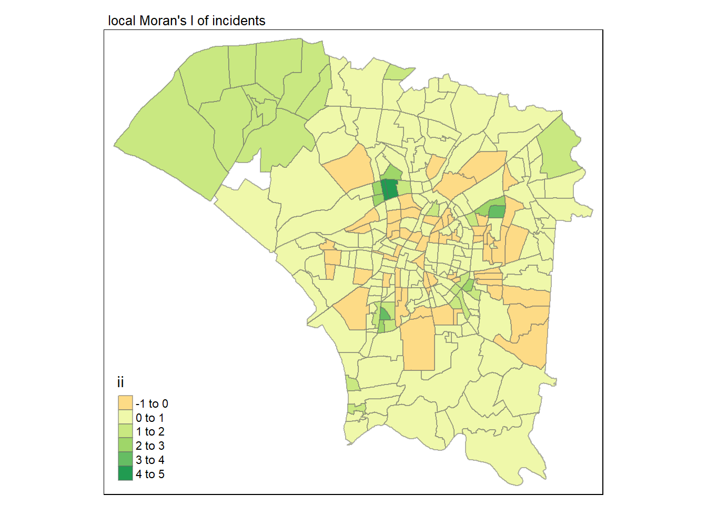
Let’s analyse this visualisation.
The dark green areas that also surrounded by dark green or lighter green areas have high local moran’s i values, indicating strong spatial correlation, and that these areas and immediate neighbours have similarly high values.
The same middle part also has many orange areas, that have low local moran’s I values. This means that there is a stark difference between the number of dengue incidents there compared to villages near it - and this makes sense.
From our first map, we know that the middle area is concentrated with dengue incidents.
The middle area is so dense with packed with many small small villages. It makes sense that some villages would be concentrated with incidents, and another village right next to it might not, and this can result in a stark difference in a stark difference in value and negative local moran.
4.5.1 Visualisng p value of local Moran’s I
tmap_mode("plot")
tm_shape(lisa) +
tm_fill("p_ii_sim") +
tm_borders(alpha = 0.5) +
tm_layout(main.title = "p-value of local Moran's I",
main.title.size = 0.8)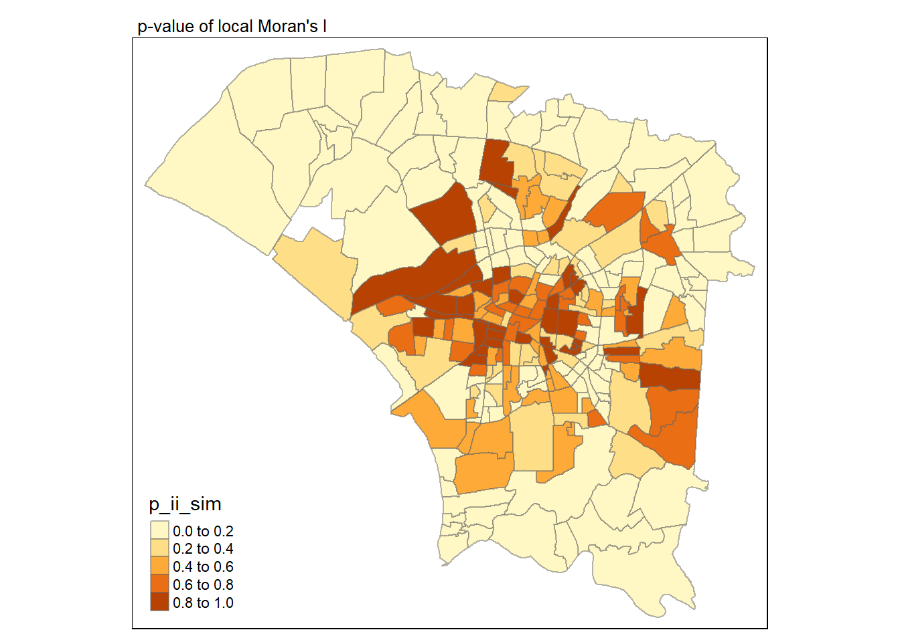
Light Brown Areas : These areas have low p-values, indicating that the Local Moran’s I values for these areas are statistically significant. The closer the p-value is to 0, the stronger the evidence against the null hypothesis (which states that there is no spatial autocorrelation). Thus, areas in this range are likely to represent significant spatial clusters or outliers.
Darker Brown Areas : As the colors get darker (moving towards the 1.0 end of the scale), the p-values increase, suggesting weaker evidence against the null hypothesis. Areas with p-values closer to 1.0 suggest that the local spatial patterns might be due to random chance rather than a significant spatial process.
4.5.2 Visuaising local Moran’s I and p-value
tmap_mode("plot")
map1 <- tm_shape(lisa) +
tm_fill("ii") +
tm_borders(alpha = 0.5) +
tm_view(set.zoom.limits = c(6,8)) +
tm_layout(main.title = "local Moran's I of GDPPC",
main.title.size = 0.8)
map2 <- tm_shape(lisa) +
tm_fill("p_ii",
breaks = c(0, 0.001, 0.01, 0.05, 1),
labels = c("0.001", "0.01", "0.05", "Not sig")) +
tm_borders(alpha = 0.5) +
tm_layout(main.title = "p-value of local Moran's I",
main.title.size = 0.8)
tmap_arrange(map1, map2, ncol = 2)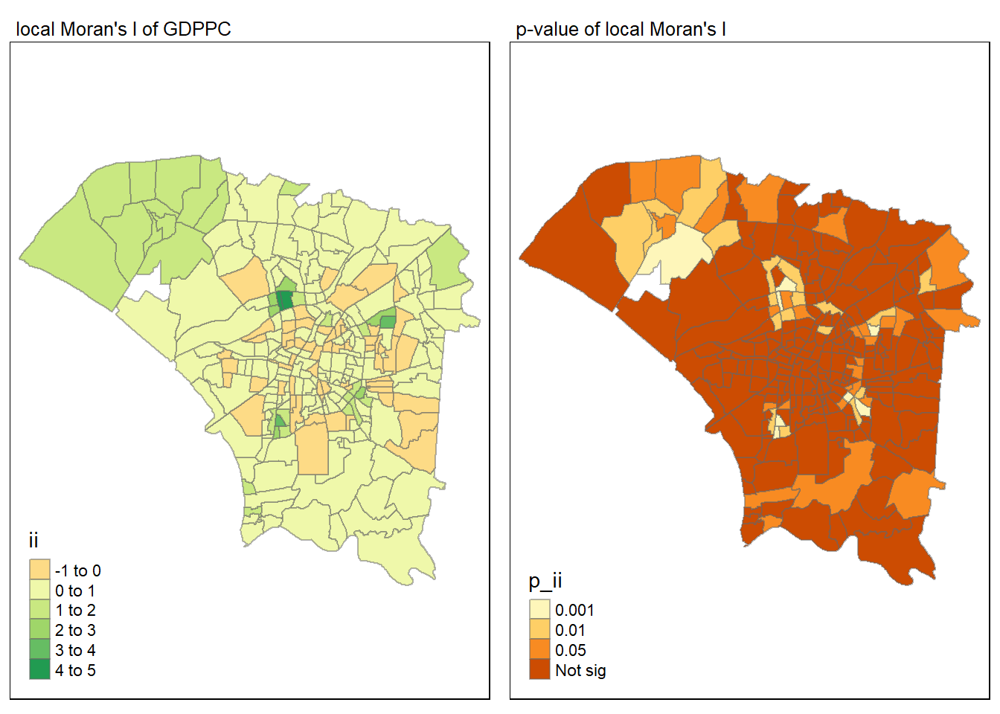
4.6 Visualising LISA map
Let’s plot the LISA map to check for of outliers and clusters.
lisa_sig <- lisa %>%
filter(p_ii < 0.05)
tmap_mode("plot")
tm_shape(lisa) +
tm_polygons() +
tm_borders(alpha = 0.5) +
tm_shape(lisa_sig) +
tm_fill("mean") +
tm_borders(alpha = 0.4)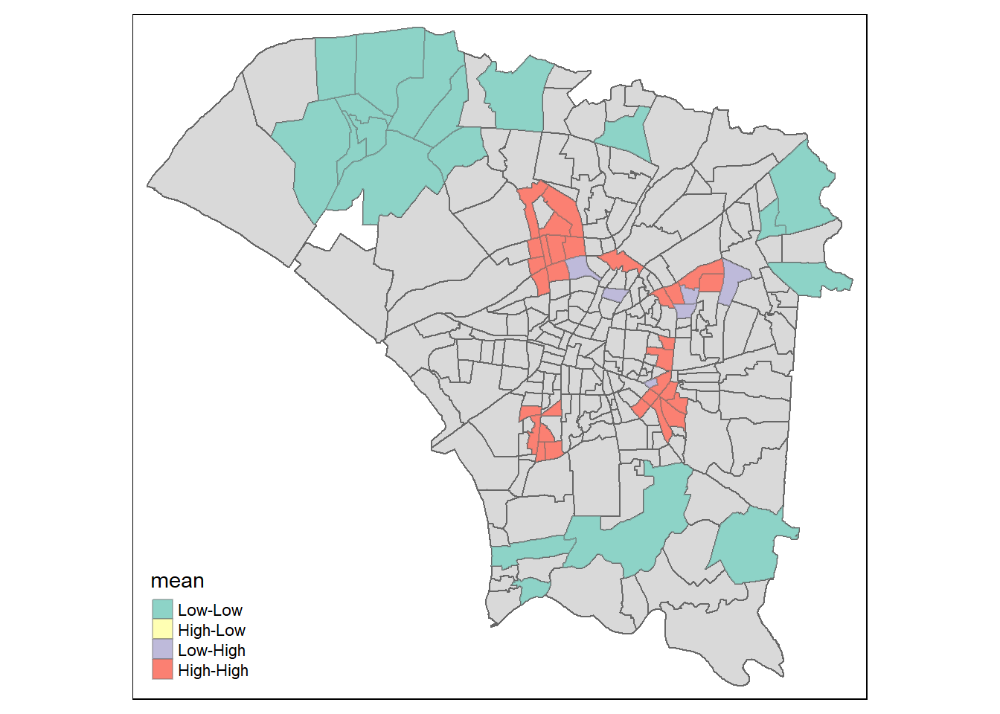
This again corroborates with our first map that shows the distribution of dengue cases , and the area around the middle part having high number of cases can be likened to the high-high villages around the middle of the city.
4.7 Hot Spot and Cold Spot Area Analysis (HCSA)
HCSA uses spatial weights to identify locations of statistically significant hot spots and cold spots in an spatially weighted attribute that are in proximity to one another based on a calculated distance. The analysis groups features when similar high (hot) or low (cold) values are found in a cluster. The polygon features usually represent administration boundaries or a custom grid structure.
4.7.1 Computing Local Gi* Statistics
tryNow1 <- tryNow %>%
filter(!is.na(incidents))We will need to derive a spatial weight matrix before we can compute local Gi* statistics.
It specifies which areas are neighbors and how strongly they should be weighted based on distance.
High positive Gi∗ values indicate a clustering of high values (hotspots), while low negative Gi∗ values indicate a clustering of low values (coldspots).
wm_idw <- tryNow1 %>%
mutate(nb = st_contiguity(geometry),
wts = st_inverse_distance(nb, geometry,
scale = 1,
alpha = 1),
.before = 1)Now we are calculating the Local GI* Statistic
HCSA <- wm_idw %>%
mutate(local_Gi = local_gstar_perm(
incidents, nb, wt, nsim = 99),
.before = 1) %>%
unnest(local_Gi)
HCSASimple feature collection with 257 features and 22 fields
Geometry type: POLYGON
Dimension: XY
Bounding box: xmin: 120.0627 ymin: 22.89401 xmax: 120.2925 ymax: 23.09144
Geodetic CRS: TWD97
# A tibble: 257 × 23
gi_star cluster e_gi var_gi std_dev p_value p_sim p_folded_sim skewness
<dbl> <fct> <dbl> <dbl> <dbl> <dbl> <dbl> <dbl> <dbl>
1 -2.35 Low 0.00295 1.95e-6 -1.93 0.0535 0.02 0.01 0.417
2 -2.07 Low 0.00334 1.39e-6 -1.73 0.0831 0.04 0.02 1.08
3 0.369 High 0.00424 9.47e-7 0.0302 0.976 0.98 0.49 0.319
4 0.366 Low 0.00362 1.38e-6 0.591 0.555 0.58 0.29 0.487
5 -2.65 Low 0.00292 1.01e-6 -2.68 0.00742 0.02 0.01 0.870
6 -3.17 Low 0.00351 1.18e-6 -3.03 0.00242 0.02 0.01 -0.0143
7 -1.25 Low 0.00342 1.60e-6 -0.983 0.325 0.32 0.16 0.650
8 -0.277 Low 0.00386 8.08e-7 -0.244 0.807 0.88 0.44 0.434
9 1.53 High 0.00438 1.42e-6 1.21 0.228 0.32 0.16 0.501
10 -1.47 Low 0.00398 1.30e-6 -1.57 0.117 0.1 0.05 0.396
# ℹ 247 more rows
# ℹ 14 more variables: kurtosis <dbl>, nb <nb>, wts <list>, VILLCODE <chr>,
# COUNTYNAME <chr>, TOWNNAME <chr>, VILLNAME <chr>, VILLENG <chr>,
# COUNTYID <chr>, COUNTYCODE <chr>, TOWNID <chr>, TOWNCODE <chr>,
# incidents <int>, geometry <POLYGON [°]>Let’s visualise it!
tmap_mode("plot")
tm_shape(HCSA) +
tm_fill("gi_star") +
tm_borders(alpha = 0.5) +
tm_view(set.zoom.limits = c(6,8))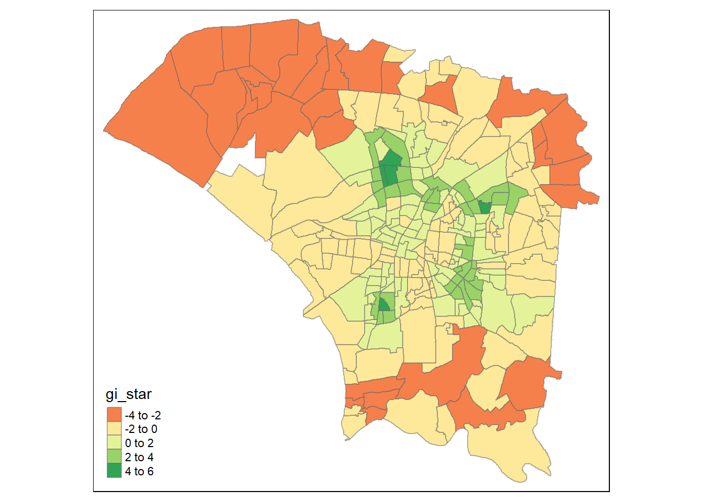
Let’s also add the first map that showed the distribution of the dengue incidents to understand the HCSA map better:
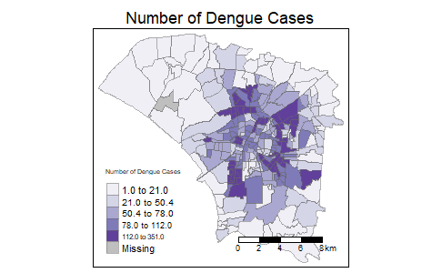
Dark Red villages :
These are likely the coldspots, areas where the local ∗Gi∗ values are significantly lower than the mean, indicating a clustering of low values.
This makes sense when we see the purple distribution map that shows how the outer areas have the lowest number of dengue cases, and they are all near each other.
Dark green and Green Villages (2-6) :
These are the villages around the middle of the city that are hotspots, where the local Gi* values are significantly higher than the mean, meanning that there is a clustering of high values which is corroborated by the purple graph too. In the area around the middle of the city, multiple villages close together have high number of dengue cases.
Here we have done Hot spot cold spot analysis and calculated Gi* values without taking time into consideration. We do not consider how many dengue incidents happened per week per village, but considered just the number of incidents per village in totaily.
Creating a Time Series Cube
Here we will create a time series cube to show the number of dengue incidents per week per village.
First, let’s remove the columns with all the NAs, which is NOTE.
taiwan_filtered1 <- taiwan_filtered %>%
select(-NOTE)
taiwan_filtered1 <- tidyr::drop_na(taiwan_filtered1)Now let’s see the number of dengue incidents per village per week. As we do not need this to be spatial data, let’s remove the geometry call.
head(dengue_pervillage_week)Simple feature collection with 6 features and 3 fields
Geometry type: GEOMETRY
Dimension: XY
Bounding box: xmin: 120.2534 ymin: 22.98918 xmax: 120.2721 ymax: 22.994
Geodetic CRS: TWD97
# A tibble: 6 × 4
VILLCODE week incidents geometry
<chr> <dbl> <int> <GEOMETRY [°]>
1 67000270001 33 1 POINT (120.2583 22.99218)
2 67000270001 34 1 POINT (120.2612 22.99222)
3 67000270001 35 2 MULTIPOINT ((120.2625 22.994), (120.2668 22.98918…
4 67000270001 36 3 MULTIPOINT ((120.2555 22.99274), (120.2574 22.989…
5 67000270001 37 5 MULTIPOINT ((120.2555 22.99274), (120.2591 22.992…
6 67000270001 38 4 MULTIPOINT ((120.2534 22.99117), (120.2639 22.991…dengue_pervillage_week <- st_set_geometry(dengue_pervillage_week , NULL)We can see that not every village has every week, so let’s create that.
We have created a data frame previously where each village code has a corresponding week from 31-50. Let’s see that
head(villagecode_week_set) VILLCODE week
1 67000350032 31
2 67000270011 31
3 67000370005 31
4 67000330004 31
5 67000350028 31
6 67000350030 31Now let’s combine the villagecode_week_set with the actual number of incidents per week per village. And the weeks that do not have any incidents will be kept as 0.
final_set1 <- left_join(villagecode_week_set
, dengue_pervillage_week, by = c("VILLCODE", "week")) %>%
replace(is.na(.), 0) # Replace NA values with 0Let’s double check to see that all villages in taiwan_filtered(Geospatial data) are in our dengue (aspatial data)
extra_observation <- anti_join(taiwan_filtered1, final_set1, by = "VILLCODE")class(final_set1)[1] "data.frame"class(taiwan_filtered1)[1] "sf" "data.frame"This is not a tibble data frame as said by prof in piazza. So,
final_set1 <- as.tibble(final_set1)
class(final_set1)[1] "tbl_df" "tbl" "data.frame"dengue_st <- spacetime(final_set1, taiwan_filtered1
,
.loc_col = "VILLCODE",
.time_col = "week")is_spacetime_cube(dengue_st)[1] TRUEComputing Gi*
Next, we will compute the local Gi* statistics, but this time taking the number of incidents, per village ,per week - its a temporal analysis as well.
Deriving the spatial weights
The code chunk below will be used to identify neighbors and to derive an inverse distance weights.
dengue_st_nb <- dengue_st %>%
activate("geometry") %>%
mutate(nb = include_self(st_contiguity(geometry)),
wt = st_inverse_distance(nb, geometry,
scale = 1,
alpha = 1),
.before = 1) %>%
set_nbs("nb") %>%
set_wts("wt")Note that this dataset now has neighbors and weights for each time-slice.
head(dengue_st_nb)# A tibble: 6 × 5
VILLCODE week incidents nb wt
<chr> <dbl> <dbl> <list> <list>
1 67000350032 31 0 <int [4]> <dbl [4]>
2 67000270011 31 1 <int [6]> <dbl [6]>
3 67000370005 31 0 <int [9]> <dbl [9]>
4 67000330004 31 0 <int [7]> <dbl [7]>
5 67000350028 31 0 <int [5]> <dbl [5]>
6 67000350030 31 0 <int [8]> <dbl [8]>This lists the neighbours of each village, and the spatial weight of each village.
Computing Gi*
We can use these new columns to manually calculate the local Gi* for each village. We can do this by grouping by week and using local_gstar_perm() of sfdep package. After which, we use unnest() to unnest gi_star column of the newly created gi_starts data.frame.
gi_stars <- dengue_st_nb %>%
group_by(week) %>%
mutate(gi_star = local_gstar_perm(
incidents, nb, wt)) %>%
tidyr::unnest(gi_star)# Inspect the structure of 'nb' to ensure it's a valid neighbors list
str(dengue_st_nb$nb)List of 5160
$ : int [1:4] 1 6 118 160
$ : int [1:6] 2 126 128 138 168 222
$ : int [1:9] 3 68 69 172 181 184 185 188 200
$ : int [1:7] 4 94 97 100 104 182 207
$ : int [1:5] 5 12 13 249 255
$ : int [1:8] 1 6 12 13 118 160 165 249
$ : int [1:5] 7 54 98 99 201
$ : int [1:11] 8 9 73 75 115 125 144 156 157 166 ...
$ : int [1:6] 8 9 110 115 125 166
$ : int [1:7] 10 11 159 161 166 236 258
$ : int [1:6] 10 11 159 161 167 242
$ : int [1:5] 5 6 12 13 249
$ : int [1:7] 5 6 12 13 14 118 255
$ : int [1:4] 13 14 118 255
$ : int [1:5] 15 16 18 139 226
$ : int [1:5] 15 16 17 139 226
$ : int [1:6] 16 17 22 139 226 240
$ : int [1:5] 15 18 139 209 210
$ : int [1:7] 19 23 24 149 151 241 246
$ : int [1:4] 20 21 23 241
$ : int [1:9] 20 21 23 140 145 197 198 208 241
$ : int [1:9] 17 22 24 139 141 148 150 151 240
$ : int [1:8] 19 20 21 23 24 140 145 241
$ : int [1:10] 19 22 23 24 141 142 145 151 164 248
$ : int [1:5] 25 26 169 211 248
$ : int [1:6] 25 26 163 211 213 248
$ : int [1:6] 27 28 128 131 136 152
$ : int [1:6] 27 28 29 36 136 152
$ : int [1:6] 28 29 30 32 36 152
$ : int [1:9] 29 30 31 32 34 39 92 152 153
$ : int [1:7] 30 31 33 39 92 95 98
$ : int [1:7] 29 30 32 34 36 39 41
$ : int [1:5] 31 33 37 39 98
$ : int [1:8] 30 32 34 36 39 41 42 47
$ : int [1:6] 35 36 38 44 131 137
$ : int [1:11] 28 29 32 34 35 36 41 44 50 136 ...
$ : int [1:6] 33 37 39 51 54 98
$ : int [1:5] 35 38 43 44 131
$ : int [1:11] 30 31 32 33 34 37 39 42 47 51 ...
$ : int [1:5] 40 43 45 131 135
$ : int [1:9] 32 34 36 41 42 44 46 47 50
$ : int [1:6] 34 39 41 42 47 51
$ : int [1:6] 38 40 43 44 45 131
$ : int [1:9] 35 36 38 41 43 44 45 50 52
$ : int [1:9] 40 43 44 45 48 52 135 225 226
$ : int [1:6] 41 46 47 49 50 56
$ : int [1:12] 34 39 41 42 46 47 49 50 51 53 ...
$ : int [1:5] 45 48 52 57 226
$ : int [1:8] 46 47 49 53 55 56 58 60
$ : int [1:10] 36 41 44 46 47 50 52 56 63 64
$ : int [1:7] 37 39 42 47 51 54 59
$ : int [1:8] 44 45 48 50 52 57 63 64
$ : int [1:5] 47 49 53 55 60
$ : int [1:9] 7 37 39 51 54 59 98 201 218
$ : int [1:5] 49 53 55 58 60
$ : int [1:7] 46 49 50 56 58 61 63
$ : int [1:5] 48 52 57 64 226
$ : int [1:7] 49 55 56 58 60 61 67
$ : int [1:8] 47 51 54 59 60 62 188 218
$ : int [1:10] 47 49 53 55 58 59 60 62 67 68
$ : int [1:5] 56 58 61 63 67
$ : int [1:6] 59 60 62 67 68 188
$ : int [1:9] 50 52 56 61 63 64 65 66 67
$ : int [1:11] 50 52 57 63 64 65 146 226 239 240 ...
$ : int [1:6] 63 64 65 66 192 239
$ : int [1:5] 63 65 66 67 192
$ : int [1:10] 58 60 61 62 63 66 67 68 192 214
$ : int [1:9] 3 60 62 67 68 69 70 188 214
$ : int [1:7] 3 68 69 70 172 176 177
$ : int [1:7] 68 69 70 175 177 214 215
$ : int [1:5] 71 72 73 154 156
$ : int [1:9] 71 72 73 75 154 189 196 203 221
$ : int [1:6] 8 71 72 73 75 156
$ : int [1:8] 74 76 140 173 174 178 179 190
$ : int [1:8] 8 72 73 75 113 125 203 217
$ : int [1:6] 74 76 109 111 140 173
$ : int [1:3] 77 78 79
$ : int [1:6] 77 78 79 80 132 223
$ : int [1:4] 77 78 79 80
$ : int [1:5] 78 79 80 132 133
$ : int [1:4] 81 82 83 133
$ : int [1:8] 81 82 83 84 86 128 133 153
$ : int [1:5] 81 82 83 84 91
$ : int [1:7] 82 83 84 85 86 87 91
$ : int [1:8] 84 85 86 87 89 91 102 171
$ : int [1:8] 82 84 85 86 87 88 100 153
$ : int [1:7] 84 85 86 87 88 90 171
$ : int [1:6] 86 87 88 90 94 100
$ : int [1:6] 85 89 91 93 102 171
$ : int [1:5] 87 88 90 94 171
$ : int [1:8] 83 84 85 89 91 102 120 143
$ : int [1:5] 30 31 92 95 153
$ : int [1:5] 89 93 96 102 171
$ : int [1:7] 4 88 90 94 97 100 171
$ : int [1:7] 31 92 95 98 99 100 153
$ : int [1:8] 93 96 97 101 102 103 104 171
$ : int [1:6] 4 94 96 97 104 171
$ : int [1:8] 7 31 33 37 54 95 98 99
$ : int [1:7] 7 95 98 99 100 201 207
[list output truncated]
- attr(*, "class")= chr [1:2] "list" "nb"Mann-Kendall Test
The Mann-Kendall Test is a non-parametric statistical test used to identify trends in a dataset without assuming the data follows a specific distribution.
It tests for an upward or downward trend in a time series dataset.
The test determines whether the observed sum of scores is significantly different from what would be expected by chance, indicating a trend.
With these Gi* measures we can then evaluate each location for a trend using the Mann-Kendall test. The code chunk below uses Changsha county.
cbg <- gi_stars %>%
ungroup() %>%
filter(VILLCODE == "67000350050") |>
select(VILLCODE, week, gi_star)ggplot(data = cbg,
aes(x = week,
y = gi_star)) +
geom_line() +
theme_light()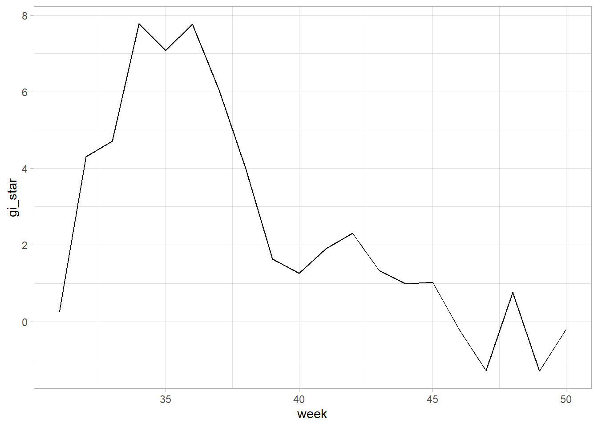
The peaks, where the ∗G*∗ values rise above 1, suggest potential hotspots. This could mean that during these weeks, the village represented by VILLCODE = "67000350050" was experiencing higher than usual dengue incidence relative to its neighbors.
Conversely, when the ∗G*∗ values dip below -1, this could be indicative of coldspots. It could imply that during these weeks, the village had lower dengue incidence relative to its neighbors.
Most of the time, until about week 47, the ∗G*∗ values were always above 1, indicaitng that there were more dengue incidents in this village compared to the other villages most of the time.
And this is corroborated by the fact that is village is from D06, which we can see is the town with the second most incidents from the graph below.
We can also see that it is the village with the second most number of incidents from the data frame dengue_per_village
There are two prominent peaks after the midpoint of the 20 week period, indicating that there were more dengue incidents in this village compared to the other villages in that time period.
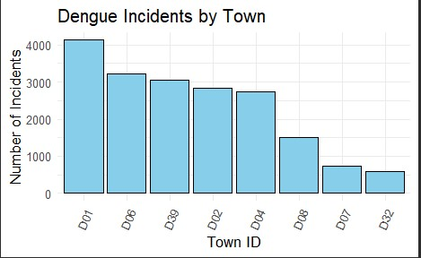
Performing Emerging Hotspot Analysis
Lastly, we will perform EHSA analysis by using emerging_hotspot_analysis() of sfdep package. It takes a spacetime object x , and the quoted name of the variable of interest for .var argument. The k argument is used to specify the number of time lags which is set to 1 by default. Lastly, nsim map numbers of simulation to be performed.
#ehsa <- emerging_hotspot_analysis(
#x = dengue_st,
#.var = "incidents",
#k = 1,
#nsim = 99
#)#write_rds(ehsa, "../../data/rds/ehsa.rds")ehsa <- read_rds("../../data/rds/ehsa.rds")Visualising the distribution of EHSA classes
In the code chunk below, ggplot2 functions ised used to reveal the distribution of EHSA classes as a bar chart.
library(ggplot2)
library(stringr) # for str_wrap function
ggplot(data = ehsa, aes(x = classification)) +
geom_bar() +
theme_light() +
theme(axis.text.x = element_text(size = 8, angle = 0, hjust = 0.5, vjust = 0.5)) +
scale_x_discrete(labels = function(x) str_wrap(x, width = 10)) # Adjust 'width' as needed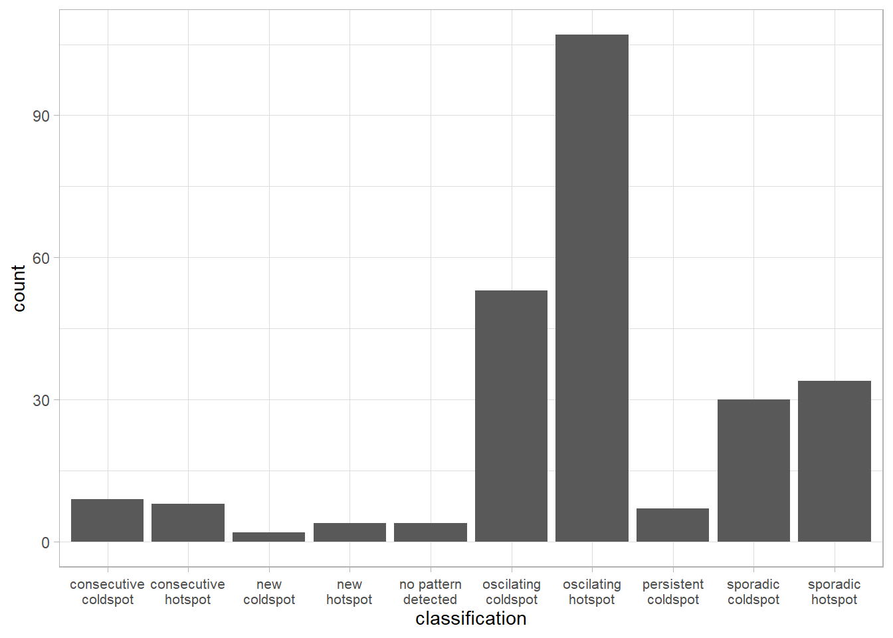
Here, there are a high number of oscillating hotspots. These locations alternate being hotspots and coldspots during different time periods. For example a village with the villagecode 67000330004 is like so.